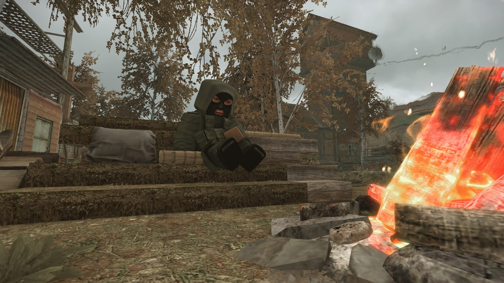
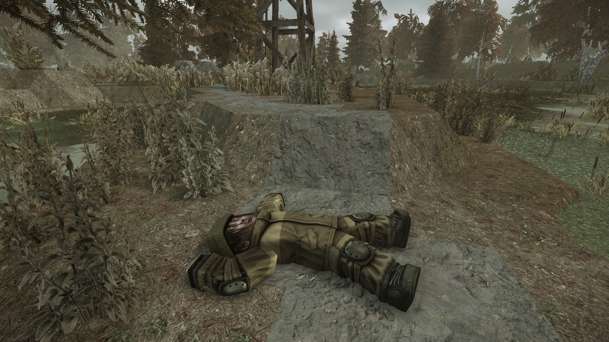

Квест берётся на базе сталкеров на локации Болота. Чтобы взять квест необходимо подойти к Борову, он сам начнёт с вами диалог. Варианты ответов ни на что не влияют и большинство диалогов в данном квесте линейные.
Прохождение квеста
Купить координаты у Синяка
Поговорив с Боровым, выходите из здания и подойдите к костру у базы — рядом сидит Синяк. Купите у него координаты.

Синяк у костра
Засада и тело Шума
Придя на место, вы увидите мёртвых сталкеров. Через несколько секунд на вас нападут три бандита с противоположной стороны. Убейте их и осмотрите мёртвого Шума.

Тело Шума
Вернуться к Борову
Возвращайтесь на базу и поговорите с Боровым.
С этого момента квест становится полностью линейным.
Разоблачить Синяка
Поговорите с Синяком и сообщите трём торговцам о том, что Синяк обманывает сталкеров.
Звонок от Борова
После разговора с торговцами с вами свяжется Боров и попросит подмоги в схроне Синяка.
Схрон Синяка и завершение
Прибыв на место, зайдите в схрон Синяка, устраните нескольких бандитов и поговорите с Боровым. Получите награду за квест.